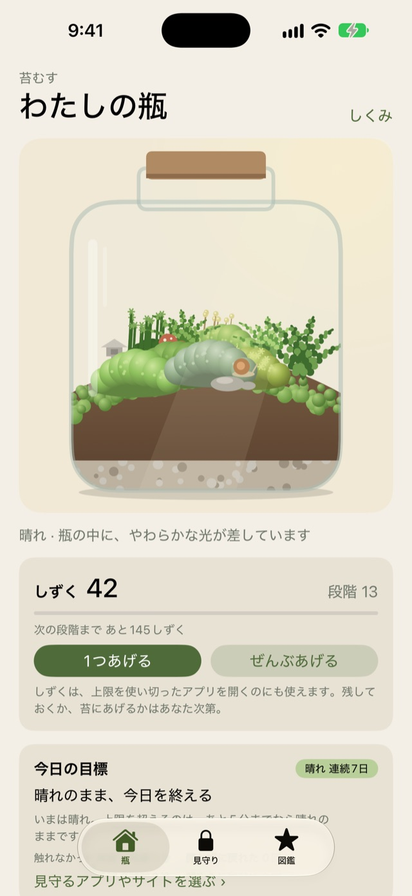
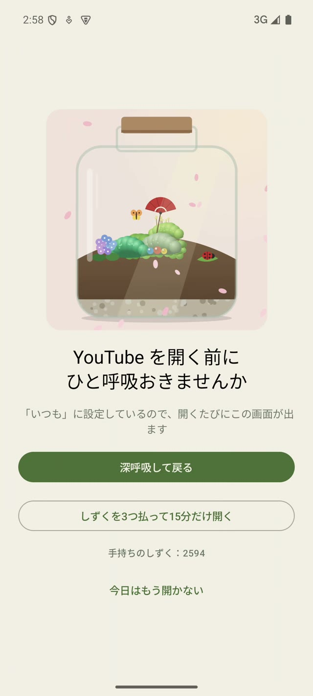
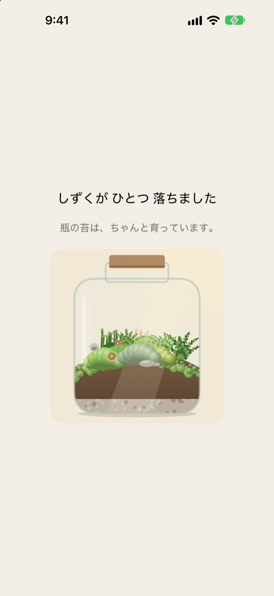
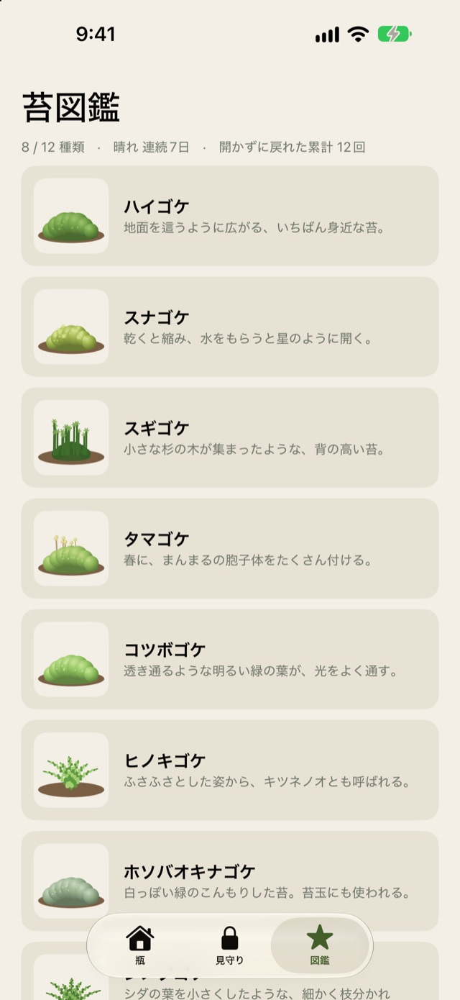
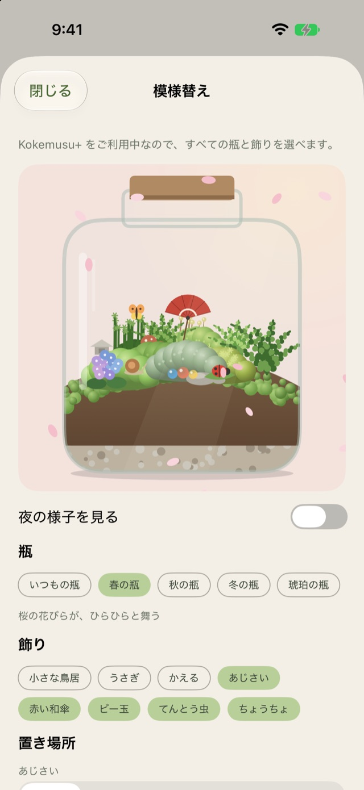

KOKEMUSU ─ 苔むす
スマホを置いた時間が、育っていく。
SNS をつい開いてしまう毎日に。見なかった時間は「しずく」になって、ガラス瓶の苔を育てます。そして、あなたの夜と朝も。
iPhone 版（iOS 17 以降）・Android 版（Android 8.0 以降）配信中

寝る前に、5分だけのつもりが
また、見てしまった。
気づけば1時間。スマホを閉じたあとに残るのは、時間を失ったことよりも、自分との約束をまた守れなかった、という小さな自己嫌悪かもしれません。
禁止するアプリも、使った時間を突きつけるアプリも、すでに自分を責めている人を、もう一度責めてしまう。だから、続かない。
Kokemusu の考え方
失った時間ではなく、
育った時間を数える。
Kokemusu は、スマホを置いた時間を「育つもの」に変えるアプリです。育つものは、2つあります。
瓶の苔が育つ
見守っているアプリに触れずにいた時間が「しずく」になります。しずくをあげるたびに、ガラス瓶の苔が少しずつ深い緑になっていきます。
あなたの毎日が育つ
早く眠れた夜、読み進めた本、顔を見て話せた時間。目に見えにくい積み重ねを、瓶の苔が代わりに見せてくれます。
苔むす ─ 苔は、触れずに静かに置いておくほど、時間をかけて育つ植物です。スマホを置いた時間も、すぐには変わらなくても、ちゃんと積み重なっていきます。
しくみ
意志の力で、
戦わなくていい。
やめたいのにやめられないのは、意志が弱いからではありません。開いてしまう瞬間に、立ち止まるきっかけがないだけです。

1開こうとした瞬間に、苔の瓶
上限を決めたアプリを開くと、育てている瓶が現れて「ひと呼吸おきませんか」と声をかけます。

2深呼吸して、閉じる
呼吸ガイドに合わせて、ひと呼吸。開かずに戻るたびに、しずくが落ちます。
3置いた時間が、苔になる
見守り中のアプリに1時間触れずにいると、しずくが6つ。瓶にあげると、苔が育ちます。
※ 1枚目は Android 版の画面です。
責めない
使いすぎた日も、
苔は枯れない。
上限を超えた日は、瓶に霧がかかるだけ。赤い警告も、責める言葉もありません。どうしても開きたいときは、しずくを払って15分だけ開くこともできます。
うまくいかない日があっても、また明日から育てればいい。だから、続けられます。
使った人の声
7日間、使ってもらいました。
使う時間が減ったと答えた人
毎日の SNS が、30分以下になった人も
苔を育てるのが楽しかったと答えた人
癖が直った。
テスターご褒美があるので、制限より効く。
テスター苔を楽しみながらできるのがユニーク。
テスター2026年11月、iOS 版のベータテスト（6人・7日間）のアンケートから。声は回答を短くまとめたものです。
育てる楽しみ
あなただけの瓶を、
ゆっくり育てる。
スギゴケ、タマゴケ、ヒカリゴケなど12種類の苔。季節の瓶や、あじさい・和傘・ちょうちょの飾り。天気や夜の景色で、瓶の表情は毎日変わります。


安心して使えるように
あなたの時間は、
あなたの手元に。
データは端末の中だけ
記録や設定はスマホの中にだけ保存し、外部に送りません。
見ている内容は受け取らない
iPhone では Apple のスクリーンタイムの仕組みを使うため、選んだアプリの名前や閲覧内容を Kokemusu が知ることはありません。Android でも、見るのは「どのアプリやサイトを開いたか」だけで、画面の内容や入力した文字は読み取りません。
広告はありません
あなたの時間を奪うものを、このアプリに入れることはしません。
料金
基本は、ずっと無料。
無料
0円
- 見守るアプリとサイトを5件まで
- ひと呼吸おく画面と呼吸ガイド
- 苔テラリウムと苔図鑑
- 使った時間の直近7日のグラフ
Kokemusu+
月額480円 ／ 年額3,600円（最初の7日間無料）
- 見守るアプリとサイトが無制限
- アプリごとの上限、時間帯・曜日のルール
- ストリクトモード、見守りのロック
- 4週間の推移、模様替えが選び放題
スマホを置いた時間が、
育っていく。
苔むすほど、ゆっくりでいい。今夜から、ひとつずつ。
iPhone 版・Android 版 配信中